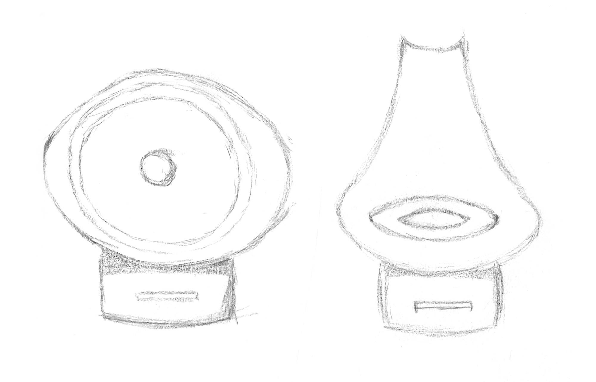
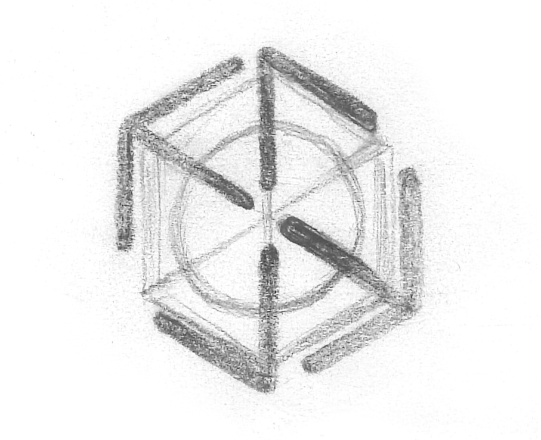
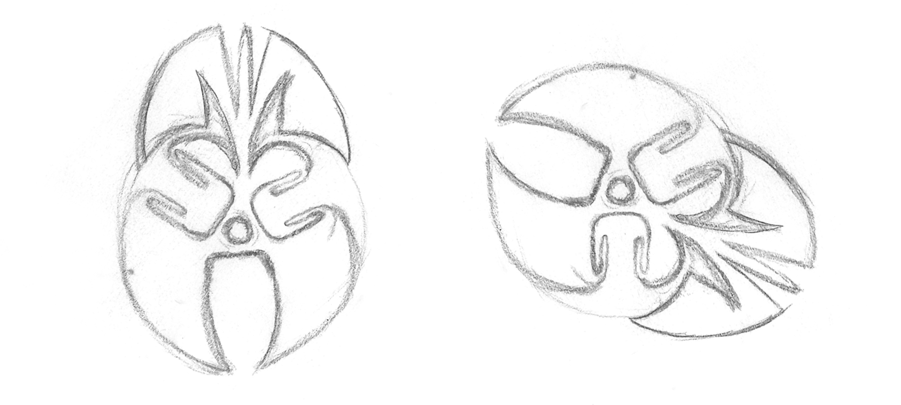
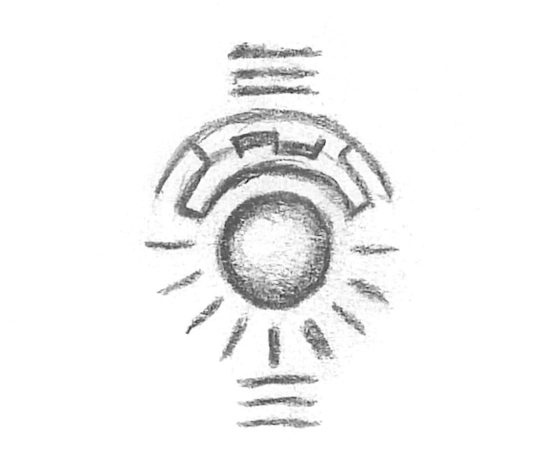
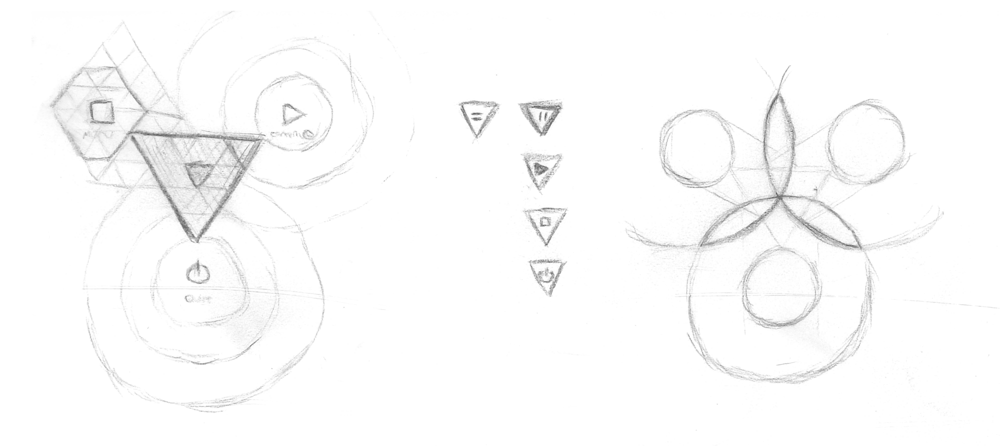
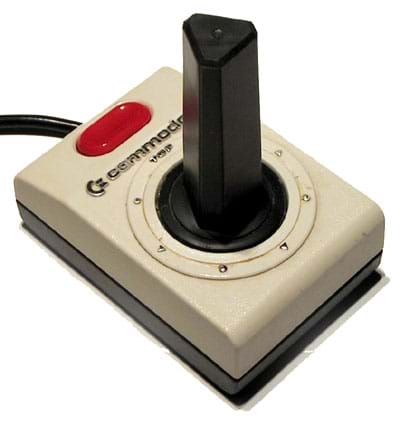
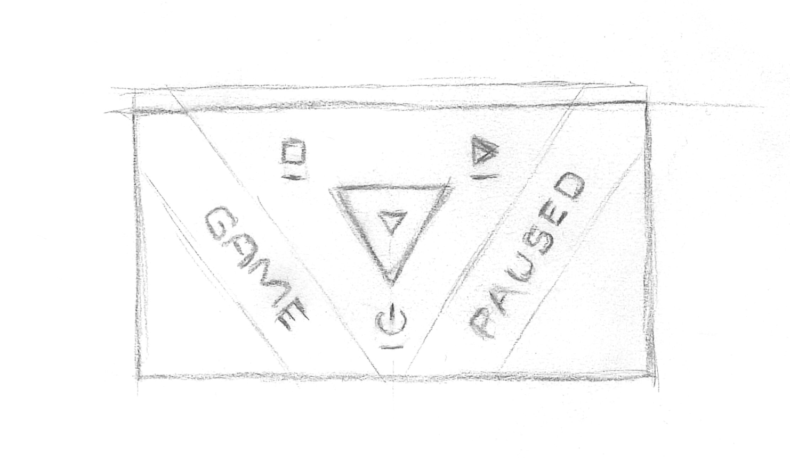
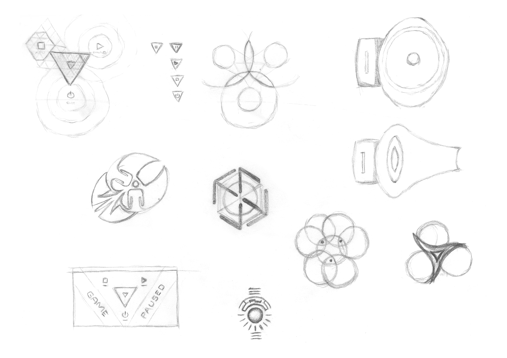

Let’s talk about how I designed the new Pause Menu.
Prelude
I was around seven when the first home computers and arcade machines unleashed electronic games into the world. I was instantly seduced, and wondered over how to design such incredible experiences. With the appearance of every new reality, that allure was nurtured and became deep-seeded passion. I saw them as a gateway to unrestricted expression and infinite creativity. From the first brush of their magic I burned to be a creator of such marvels; to liberate the unfathomable visions of my mind and cast them into the world for others to enjoy.
I spent decades playing them, studying them, absorbing everything they offer, analysing how they do what they do, and dreaming of what I want them to do. Meanwhile I forged a career in software development, learning and practicing the art of code. Despite living in the world’s most isolated city, where good opportunities are rare and difficult to obtain, I have been fortunate and made a successful living as a software developer.
I’ve seen many types of developers over the years, and observed how swathes of programmers shy away from creating beautiful visual experiences. Something about the challenges of code grinding consumes many a developer, who turn their backs on the visualisation and interaction aspects of software. They seem content to limit their craft to writing and maintaining systems of pure data. It seems to be an event horizon in the field of computer science, resulting in a majority of people who shun, rather than embrace, the skillset required to fashion creations for the experience of others.
I’m definitely not of that mindset. As a highly visual person I’ve always held experiencing software in the same high regard as creating it. I have a huge passion for crafting delightful and seamless interactions, and have eagerly filled the roles left void by engineers more afraid of UI than inspired.
At other times I’ve been fortunate to spend time working under and alongside people who specialise in design instead of programming. I wasn’t even aware design was a thing for over a decade of my career, when I finally landed a job on a project requiring the expertise of a full-time designer. The shock of realising there was an entire industry I had never encountered was another world-expanding moment in my journey; like living a lifetime in the moonlight before seeing world in the full sun.
I had found the door to a part of me I’d felt was missing but couldn’t describe, and threw myself into exploring the domains of design with insatiable thirst and relentless energy. For several years I did everything in my power to learn all I could about design, the practices of visual designers, and the fields of computer-human interaction. While I still feel incomplete after discovering design so late in my career, I am blessed to have had the opportunity to discover and empower myself with it at all.
I am at a point in life where I have achieved a comfortable balance of design and engineering knowledge and experience. I feel no fear as I design and develop.
I dream and I do.
Background
It may simply be an inability to find the right community, but I rarely see people sharing their thoughts about designing user experiences for software. Sure there’s a plethora of articles, texts, courses, and advice about creating experiences within Web Browsers (Steve Krug has the best book about it I’ve ever found on the topic), yet the vast majority of them seem biased toward the Web as the visual medium.
I’m talking about design at a higher level; where are the references on how to think about design for getting the best experience for users of software in any electronic medium?
I caught my first glimpse in 2010 when Bill Buxton did the keynote at Microsoft’s Mix10 conference (wish I could find a link for that), and his book on Sketching User Experiences ushered me down the path to explore the field of UX (much appreciated Bill). I was beaten over the head with it by Bret Victor talking about Inventing on Principle, and Bret’s work on designing better interactions continues to be the finest I’ve encountered. His current project is pushing boundaries, lifting the concept of software to the physical world.
If you’ve never seen Inventing on Principle, do yourself a favour and watch it now!
The people and works I’ve mentioned have altered the course of my life in significant and positive ways. When they crossed my path I felt I had uncovered the tip of a giant iceberg; that I would dive in and drink the knowledge until my mind overflowed.
But that never happened. I haven’t found anyone since who talks about the subject, let alone expands on it. I’ve had to make do learning from masters of more restricted disciplines, eking whatever I could and pocketing it within my own pool of knowledge.
I feel it’s about time I began to write about how I do design and weave it into the narrative of my posts. With that in mind, let’s explore the process I went through to design the new Pause Menu I’ve just built for my Capability Test app.
How It Began
As I’ve mentioned in previous posts, I wasn’t at peace with the first Pause Menu I had created. Sure it was functional enough, allowing me to navigate to all corners of the app. I avoided digging too deeply as to why I was uncomfortable with it and had decided it was good enough for now. I was going to move on and build my next capability test.
Not long after making this decision I found myself on a long-haul jet flight for a family holiday. It was one of those rare flights where I hadn’t brought my Surface with me to work on my game, as our destination didn’t have a safe and I couldn’t afford to replace my hardware if something untoward were to happen.
Instead, I had brought along some paper and a pencil with which to sketch. I figured if the in-flight entertainment wasn’t interesting I could always practice drawing with physical tools for a change. Sure enough the idea of sitting passively watching TV paled in comparison actively doing something, and it wasn’t long before I pulled out my tools and started scribbling away.
Warmup Sketches
To warm up I did a mindfulness exercise to ground myself within the noisy, unfamiliar environment I was in. I find this technique calms my mind and creates a healthy mental space to fill with creative thoughts.
Following that I began thinking of what I could sketch. In the past I had sketched enemies for my game and figured that was a good place to start. After a short period of “writer’s block” I was growing impatient so I began scouring my surroundings for inspiration.
The seat in front of me had an interesting surround for the phone recharging port and I was inspired by that for a while. The first sketch felt a little too Minion-like for my taste, so I played with softening the square edges and reshaping the head to remove the inference. Here’s the result:

Having warmed up I looked around for further inspiration. By utilising things from the real world I hoped my creations would infuse a familiar feel with my own style to make them unique and interesting. After some time I realised the symbols used by the aircraft signage were a potential gold mine of familiar sources and I settled on using an arrow from the emergency exit sign for next piece.
The dimensions of the arrow evoked echoes of isometric geometry in me so I sketched this as a potential enemy ship:

As a designer I’m always keen to explore playing with negative space. For my next sketch I decided to take the person symbol from the toilet sign as a base and doodle with it. A Sphinx-like figure began to emerge. In a purposeful flurry I began adding symmetry, wings, and really went for it with the use of negative space. The result is some sort of statue-y thing. I don’t have a use for it right now but who knows if it will find some purpose later on in development.
Here’s the final image, and the same image rotated so you can make out the person symbol in it’s correct orientation:

With my passion for symmetry ignited and my creativity fully warmed up, I wanted to create something deliberate and original. Taking the lead from the head of the person symbol (oh I do love a circle!), I sketched a sphere and began putting some structure around it. This opened up to more play with negative space and I added expression lines to form the impression of a larger circle.
On it’s own it looked too controlled, so I added some horizontal lines above and below to indicate some mysterious purpose. I coloured in some of the structural pieces to break the symmetry and it really looked like there was a message trying to be told here. I assure you there isn’t!

Succumbing to Design Impulses
Throughout the time I was sketching these I kept having to ward off distracting thoughts about my discomfort with current state of the design of the Pause Menu. Now that I had sketched a few things and felt I was being productive, and with plenty of flight time remaining, I turned my attention to analysing why I felt uncomfortable with the original design.
As a reminder, here’s what the Pause Menu looked like at that time:

Three comfortable buttons, with labels and icons. Anyone who paused the game could look at these and know how to use it in an instant.
What was it that disturbed me in this simple interface? As a designer I usually strive for such simplicity; for the user to instantly understand what to do with minimal explanation or guidance. The arrangement I had produced could already be viewed as a pinnacle of design; 3 clear choices, a simple tap and away you go.
However that design didn’t work on the Android platform. While ideally there are only 3 choices, on Android the app can’t close itself without breaking the development rules of the operating system. I shared my disappointment at discovering this late in development in part 1 of this series. This is knowledge I wanted to carry with me into a redesign.
Something else to consider was the distinctive feel of the game. A simple menu such as this would look at home just about anywhere on any app ever. From a different viewpoint however, any one app with this design looks the same as every other app. While that may be fine for my Capability App with an intended audience of just me, I want to eventually lift the code for this menu and put it in my game at a later point, and everyone else would see and use it.
When I asked myself “Are you happy with this being the Pause Menu in your game?”, the answer was a resounding “No!” because it just felt too generic. The design of this menu looks straight out of the “form-based business application development” handbook, not “designing for awesome game experiences - masters edition”. It’s the design equivalent of having developer or placeholder art in the final game. This was a valuable realisation to have before I redesigned.
One final thing to consider was that I may need to add more options to the menu as development progresses. For example, a player may want to tweak game settings such as the volume level. A familiar place people look to find such options is the Pause Menu, as the menu itself is generally quick to access during game play. The point for me here, however, was to ensure the design is flexible enough to accommodate more options in the future, with minimal development effort, if I need them.
note
It’s a common usability pattern for players to quickly alternate between tweaking settings and playing the game, trying to find optimal values before continuing with extended gameplay. Designing for this experience means carefully balancing accessibility, speed, and affordance. Because the Pause Menu itself needs to be accessible at pace, there is a natural synergy to providing access to in-game settings from the Pause Menu.
Identifying the Root Cause of the Problem
I now had a revised set of requirements to take into a redesign brainstorming session; a Brief. I didn’t write these down at the time because having them swimming around in my mind is usually enough for me. However I’ll list them out for you here so it’s clear exactly what they were.
- The menu must have 3 choices for navigation:
- Continue playing
- Go back to the main menu
- Quit the app
- On Android, the
Quitinstruction doesn’t make sense on it’s own. One of the following must be true on Android:- The
Quitinstruction must not infer the app will close (relabelling?) - The
Quitinstruction could have further instruction on how to actually close the app (intermediate dialog?) - The
Quitinstruction could be removed on Android (avoidance?)
- The
- The menu could have more than 3 choices in the future
- The menu could have different choices in the future (e.g. relabelling
Quiton Android) - The menu should be quick to access
- The menu should be easy to use
- The menu should be intuitive to use
- The menu must be efficient to use (i.e. selection must be fast)
- Menu interaction should reflect the feel of the game
note
Notice how I use terms such as must, should and could to phrase my requirements. From experience I have learned the MoSCoW method is the best way to externally convey clear understanding and priority of what is required. I find it beneficial to think that way as well.
That last requirement may seem vague because I haven’t blogged about the feel of the game yet. That isn’t to say it hasn’t been defined; I have spent many hours refining my ideas about it. I am yet to create a formal Game Design Document because I enjoy leaving flexibility to discover new ideas while I explore how to code up the building blocks for the game. I’m experienced enough to recognise scope creep most of the time, so that isn’t a concern for me.
I have strong ideas about how the game interface will work, how it will look, how it will feel, and how it will sound. For the moment I leave these loosely connected in my mind, swimming around like a soup in my head. Through practice and experimentation I’ve discovered the best way to allow my designer-mind to work is if I formalise such things at the last possible moment, maximising the time I have to work on the problems on my plate today.
What I will share for now is that a key principle of my game is the interface must be a delightful haptic experience. Controlling the player ship through touch manipulation is as important an aspect contributing to an enjoyable player experience as anything else in the game, and I’ve designed this principle into the game from the very beginning.
With that in mind, when I looked at the first Pause Menu design with it’s three comfortable buttons, it became pretty clear to me what the problem was. There was simply no fun in using that interface. There is no playfulness, no delight. It did not reflect the haptic principle that is a pivotal part of the experience of playing my game. It is a completely forgettable interaction for a user to tap one of those buttons, and that was the crux of the problem.
Ideation of the New Design
At last I understood what it was I didn’t like about the design of that menu, why I didn’t like it, and all the requirements I needed for improving it. Now all I had to do was brainstorm ideas that covered the new Brief as much as possible. Fortunately I still had plenty of time to think while my flight continued, and I already had my creative juices flowing. I was ready to tackle the task.
If I truly wanted to celebrate the touch aspect of the interface, I somehow needed to incorporate dragging across the surface with touch gestures. If I was to have gestures I needed to have visual feedback so a player could see the effects of their gestures. If it was to be intuitive it needed to be familiar, even while I create something that uniquely reflects the feel of my game.
I began to reflect on established UI controls, testing whether they matched my Brief. Of all the controls, the best fit was the humble ScrollBar. Though restricted to a single dimension, it feels natural and familiar to drag a Thumbnail along the ScrollBar rail/track to change the value of a property. It has visual feedback while manipulating with touch, and is intuitive to use.
While I knew a ScrollBar only changes the value of a single property, it was the Thumbnail that caught my interest. If a Thumbnail were free to slide in multiple directions, I wondered if it could be used to allow the selection of one of several values. Perhaps allowing movement in both the x and y direction, contained by some bounding field, would be a potential solution.
At the same time, I was thinking of how to visualise multiple dimensions in general. Because I’m a huge fan of Geometry, I typically think of geometrical shapes at times like these. This time was no exception. Blending this line of thinking with the problem of choosing from three values led me to think of a 3-dimensional geometrical shapes; Triangles. If a selectable option were placed at each corner of a Triangle, could a player drag a Thumbnail onto each option to select it?
I began sketching as I was thinking:

As I worked a memory was triggered; I remembered an old joystick Commodore 64 joystick with a triangular-prism for a shaft (like a Toblerone Chocolate Bar packet). You would push the shaft to indicate your choice of eight directions (nine of you count the default no-direction state). As with all digital joysticks, if you stopped pushing the shaft it would snap back to the centre.

What would it look like if I merged all these ideas? A triangular Thumbnail, pushed around by touch, restricted by a triangular field, with the three selectable options at each corner, that snapped back to the centre when the gesture was complete? I began sketching what a Pause Menu with such an interface would look like:

I knew from Geometry that by having the Thumbnail be a smaller-scale version of the same shape as the containing field, the Thumbnail would fit perfectly in any corner. I realised this state could be how the player could position the Thumbnail to indicate they wanted to select the option at that corner of the field. I also realised this would work for any convex geometrical shape, allowing me to generate geometrical fields and Thumbnails for however many numbers of options I needed as my game development progressed.
I had prior knowledge that Godot (the game engine I am using in my game) has a move-and-slide behaviour built in. It should be fairly easy to create a mechanism where a gesture-driven Thumbnail would be restricted by the edges of the field and slide snugly into a corner when pushed around by the player.
It was all sounding quite promising.
Checking Against the Brief
My excitement was growing at this point as I was thinking the design was going to work. As I imagined using the mechanism it satisfied the feel I was after much better than the original design.
It was time to cross-check with the Brief to ensure I wasn’t missing anything important:
- The menu could be accessed by the same mechanism before, which was already intuitive and quick. :heavy-check-mark:
- The menu had 3 options that could be chosen. :heavy-check-mark:
- Because I was using Geometry to match the number of options to choose from, I could generate the interface and the mechanism would still work. :heavy-check-mark:
- It encapsulated the feel I was after. :heavy-check-mark:
There were a few questions remaining to be answered. Would it be easy to use? Would it be efficient to use? Would it be intuitive?
Final Tweaks to the Design
As for the intuitiveness, I needed to build a prototype and test it out for myself (and playtest it with other people as well). That wasn’t going to happen before I landed so I put that aside as future work.
I had a concern about how easy and efficient it would be to use. On a phone the Thumbnail may be too small to touch with a finger, or be obscured by the finger as the player dragged it around.
This was a relatively simple one to solve as I had already built a similar mechanism in my Touch Manipulation Test. Because the only touch-controllable part of the new Pause Menu is the Thumbnail, I would make it such that you didn’t need to start the gesture by being in contact with the Thumbnail itself. Wherever your finger was on the screen when you started the gesture would be the point where the Thumbnail’s position change would be calculated from as you dragged. You could push and pull the Thumbnail from anywhere on the screen you felt comfortable.
This technique isn’t new, it is a well established technique in many touch interfaces. Applied here it would certainly make the Thumbnail easy and efficient to move around. With your finger out of the way the Thumbnail will be clearly visible, even on small mobile devices. The player should intuitively understand the physics when they see the Thumbnail colliding with the containing field as they move and slide the Thumbnail around.
Finally, I thought by orienting the Triangle correctly, the user could intuitively expect the correct option/outcome when they swiped. Placing the “Go back to the main menu” option on the left and “Continue playing” option on the right mirrors the familiar swipe left to “Go back” and swipe right to “Go forward” on a browser. The Thumbnail would collide with the edge of the field and slide into the appropriate corner as a result of the swipe.
That left “Quit the app” as either swipe up or swipe down, depending which way the triangle points. On Windows (a target platform for my game), a swipe down is used to close the app in WinRT, so I chose my triangular field to point down. Again, this keeps some familiarity among gestures.
Design complete!
Summary
Congratulations on getting to the end of this mammoth post! I hope it wasn’t too dry as I recounted my process. Communicating all that thought and reasoning in text has been challenging to make this an easy read.
Remember, just like coding, design is all about:
- thinking at a high level to ensure you’re moving in the right direction…
- thinking in intricate detail to ensure everything is appropriately covered…
- doing both at the same time to ensure everything works harmoniously to achieve the right result.
Here’s the full page scan of the page of sketches I created while I was on my flight for your reference. You may even spot some bonus sketches if you look closely!

Final Words
I hope the information in this post assists you with your own design process and helps to make better software. The world has too many examples of poor design choices for my liking, and I believe as more people showcase their design processes, in more electronic mediums than just the Web, good design will become more ubiquitous and the world will be a better place.
In the next post of this series I’ll get back to the programming side, and talk about how I took this design into a prototyping phase. I’ll talk about more of the challenges I faced and how I overcame them.
I look forward to seeing you in the next post!